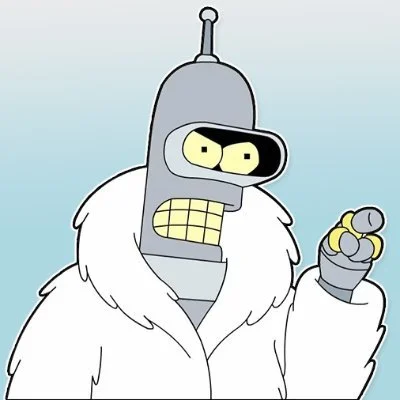

Hola, Soy Bender!

Es el mejor amigo de Fry, y el cocinero de Planet Express. Fue fabricado en Tijuana, México, en el año 2997 (según el capítulo 3ACV01 - Amazonas con ganas). Existe un robot idéntico a él, salvo por una barbilla negra, llamado Flexo, que aparece en cuatro capítulos; en unos es un amigo inseparable de Bender, mientras que en otras veces se llevan bastante mal.